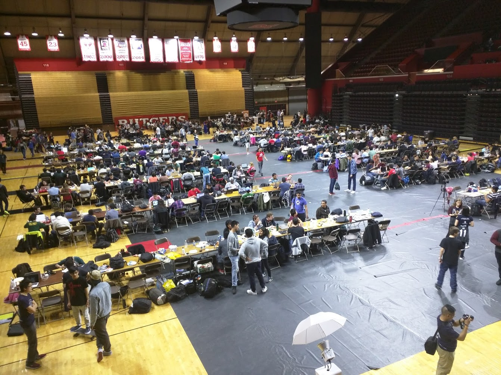

Prologue
I want to write this more like prose because it's a story. And it'll be in first person
because it's mine. Hopefully, I'll figure out a way to navigate the weeds: there are some
issues with talking about people's personal details, so I'll just anonymise in the worst
case scenario.
This is mostly about the mistakes I made in college. There's definitely some good stuff.
Pride. I want this to be prose -- like some of the
other things I linked.
So the tone will waver and likely suck. And there'll be paragraphs about the room I happened to
be in. Hopefully I'll edit this -- may the git log be ever in my favor.
Without further ado...
My First HackRU
Data structures was, initially, scary. I heard of BSTs from a friend, and I knew linked lists
from random programming things I'd look up. But what about assignments? Coding? The tests? I
had no idea how to even sit through a lecture. If only I could go back and try again: I'd know
so much more.
The first lecture, however, included a part I could barely hear: somebody came in and talked about
a CS club. I had heard of the CS club at this point -- USACS. I knew that they were the group of
people who apparently talked about the things I liked: functional programming, linux, and just
programming. It sounded like they were the right people. But I couldn't hear anything that was
being said except for something like "code red," "for new students," and finally, "Friday at 1pm,
Hill 252, the CAVE."
I don't remember the exact mistake I made: whether I got there at exactly 1pm or 20 minutes before.
I know that I waited a few weeks, pretty much out of nervousness. Now that I try to remember the
corridor as an unfamiliar place, I find it difficult. The day had to be cloudy: the corridor was
dark as it tends to be when the sun doesn't make it through the tall windows and the lights above
aren't on. It was also likely September. But I don't remember the date. The room was dark and locked.
Furthermore, I had no idea who would be in there. In fact, I waited. I'm not sure how long. But eventually,
a person showed up and I think I was told to come later. So I did. And was greeted by something worse than
the locked door: a room full of strangers. And they weren't strangers to each other: there was some sort of
order in the room. They all knew each other and nobody knew me.
I almost certainly digress, but that was part of why I didn't go to the first HackRU for which I was at Rutgers.
I didn't know any CS majors and I didn't know anybody else who'd be interested.
The next February, I was a Facebook event for organizing HackRU. At first, I thought it had something to do with
the organizers inspiring me to attend. So I went: I needed the inspiration. Of course, I misunderstood: the organizers
were trying to get me to help them organize. This was interesting. Immediately, from the presentations, I knew that
I wanted to help make the website.
I'd tried my hand at one by then, so thought I'd suit me.
Plus I wanted to code. I knew I'd enjoy that.
Naturally, as it seemed with everything in college, I didn't get what I wanted. I was put on the sponsorship team since
the website's coder at the time didn't want help -- at least, from some unknown freshman. And he led the sponsorship team,
so that probably factored in. I was put on email duty. I emailed companies hoping that they would give the hackathon some
money. This was considered critical by everybody, but I did nothing: none of the companies I reached out to responded.
And I felt ingratiating. So all in all, I thought I had wasted everybody's time by being the person to send out emails
to companies and not wheedling enough to get a response.
The weekly meetings of the sponsorship team led me into the CAVE: that room of close-knit strangers who intimiated me.
But I stuck around, despite coming to the room too early for the meeting: I now had an excuse. The strangers couldn't
kick me out (not that they were ever inclined to). Slowly, I realised that these strangers were the like-minded CS majors
I was missing in the Fall. So I came to the CAVE more, made detours and pit stops, as I learned more about what actually
happened at that strange place.
Yet, I was inadequate. So, on the night before, and the day-of, I tried to make up for this deficit.
The night before, I spent hours laying cables
and became one of the experts on this simple network. The next morning, I was pushed to keep the key to the WiFi router
boxes since I happened to get up early enough to be there (and who understood what the technician was saying, since I
heard it all the night before). In fact, at this point, I was also told to layout the cables instead of waiting for the
director of internet to lead the way. So I even got to tell some volunteers what to do (as if I knew any better than they).
I remember joking with them about how our daisy-chained power strips were linked lists. I didn't know that one of those
volunteers would be my co-director.
That morning, it finally came together. Registration was starting and the volunteer shift changed. For a moment, I had
little to do, so I looked around. I'm tempted to say I was trying to find work, but really, I was dazzled.

It was not one of the things I thought I would say about my college experience: that I helped 800 people come to an event
to code. It made be feel, probably for the first time in a while, as a part of a whole. And, at least to me, that whole had
some meaning.
I don't think I did enough during the event: I lent a hand here and there, but went
back to my dorm in the middle. I was not back until a little late the next day and felt bad about it: the director of
internet, the website guy, the various people I'd met, probably barely slept. So I had some sort of survivor's guilt.
The worst was meeting some of the people at the food table who'd stayed up all night. They kept some tired morale around
the snacks. The hackers too, were looking exhausted, if awake. I helped clean up, staying until 6pm. I was acknowledged
for my hardwork -- I remember that much. For once, unlike the cruel society I thought I had lived in, I found myself
somewhere where my quiet work could be acknowledged for exactly what it was.
Directorship
I was a little lucky in that the director of internet wanted to step down. That, and people apparently remembered me running
around with the cables on the day-of. The oddest part was the interviewing for a co-director. I went from a useless organizer
to somebody choosing my own co-director. And I didn't know people. I had no idea what I was even going for: what kind of
person should I seek out? I had guesses, but the good outcome was sheer luck.
The process was intriguing. There was a suprising amount of detail and organization to the process. There was a serious
interview where we discussed goals and plans, trying to vet people. The person who ended up being my co-director took the call
while walking around after dinner. I remember seeing the sidewalk as he explained what he'd do to improve HackRU.
Our first semester didn't hint at the efforts that would eventually follow. The director of internet was a dying role since the
Rutgers technicians made WiFi work so there wouldn't have to be a brigade running to organize the ethernet cables (all 50 of which
we kept, dreading the day that the WiFi would fail us). The semester was spent waiting for the Rutgers technicians to come back
with details for our event, and the event itself was not that busy.
There was an odd change coming though: the executive direcctor was building a new team to help a need that nobody had bothered to
formalize. Nobody was building the website as their job -- they were doing it as a chore somebody would pick up on top of their
normal director duties. The new plan was to have a team focus on that among other things.
The scene was strange: after a principles of programming class, I joined some of the directors in their apartment for lunch.
I was probably worrying about some other class while eating lunch on their kitchen counter -- those grey peninsulas in the
Livi apartments with the tall wooden chairs. The executive director pitched the idea quickly and concisely, because we really
shared the rough outline of the dream. R&D would be two things: a team to develop hackathon infrastructure from Rutgers
for Hackathons everywhere, and a place for people to learn how to develop web apps.
The First Semester of R&D
The first semester of R&D was a story in improvisation. There wasn't any notion of a club where people had to code user-facing
products on a deadline. We didn't even know who to pitch it to if even how to pitch it. Through Facebook posting and emailing,
we rounded up about 20 interested people. We also found out that the rooms in the side of Tillet hall were empty at 8 or so
on Monday nights (I think), so we took up a room in Tillet and made an event.